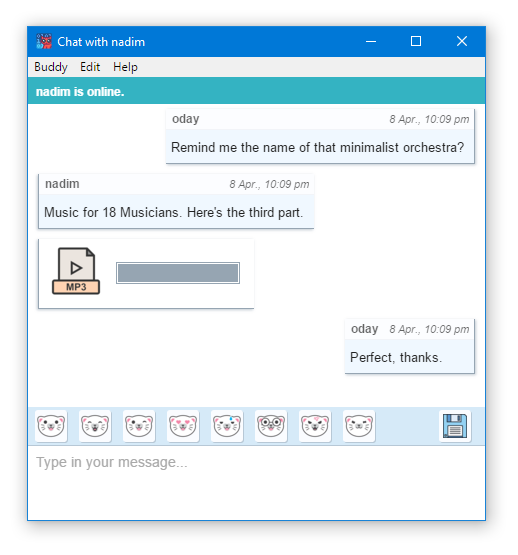

News
- Cryptocat 3.1.22 Release Notes — May 8, 2016
- Cryptocat 3.1.21 Release Notes — May 6, 2016
- Cryptocat 3.1.20 Release Notes — May 5, 2016
- Cryptocat 3.1.19 Release Notes — May 4, 2016
- Cryptocat 3.1.18 Release Notes — May 3, 2016
- Cryptocat 3.1.17 Release Notes — May 3, 2016
- Cryptocat 3.1.16 Release Notes — May 3, 2016
- Cryptocat 3.1.15 Release Notes — May 2, 2016
- Cryptocat 3.1.14 Release Notes — May 2, 2016
- Cryptocat 3.1.13 Release Notes — May 1, 2016
- Cryptocat 3.1.12 Release Notes — May 1, 2016
- Cryptocat 3.1.11 Release Notes — April 28, 2016
- Cryptocat 3.1.10 Release Notes — April 24, 2016
- Cryptocat 3.1.09 Release Notes — April 24, 2016
- Cryptocat 3.1.08 Release Notes — April 23, 2016
- Cryptocat 3.1.07 Release Notes — April 21, 2016
- Cryptocat 3.1.06 Release Notes — April 21, 2016
- Cryptocat 3.1.05 Release Notes — April 20, 2016
- Cryptocat 3.1.04 Release Notes — April 20, 2016
- Cryptocat 3.1.03 Release Notes — April 19, 2016
- Cryptocat 3.1.02 Release Notes — April 18, 2016
- Cryptocat 3.1.01 Release Notes — April 18, 2016
- Cryptocat 3.1.00 Release Notes — April 17, 2016
- Cryptocat 3.0.31 Release Notes — April 14, 2016
- Cryptocat 3.0.30 Release Notes — April 13, 2016
- Cryptocat 3.0.29 Release Notes — April 12, 2016
- Cryptocat 3.0.28 Release Notes — April 12, 2016
- Cryptocat 3.0.27 Release Notes — April 9, 2016
- Cryptocat 3.0.26 Release Notes — April 9, 2016
- Cryptocat, Now with File Sharing — April 8, 2016
- Cryptocat 3.0.24 Release Notes — April 4, 2016
- Cryptocat 3.0.23 Release Notes — April 2, 2016
- Cryptocat 3.0.22 Release Notes — April 1, 2016
- Cryptocat 3.0.21 Release Notes — March 31, 2016
- Cryptocat 3.0.19 Release Notes — March 31, 2016
- Cryptocat 3.0.18 Release Notes — March 30, 2016
- Cryptocat: Beta Release — March 29, 2016
Cryptocat 3.1.22 Release Notes
May 8, 2016
Cryptocat 3.1.22 is now available and brings the following improvements:- New feature!Mark which of your buddy's devices you trust, and choose to send messages only to these devices.
- New feature! Messages from your buddies will show which device they were sent from.
- The Add Buddy, Change Password, Device Manager and Update Downloader windows can now be closed by pressing Ctrl+W in Windows and Linux. Previously, this was only true for Mac.
- Chat windows will now no longer auto-scroll upon receiving new messages if the user is currently scrolling up to read previous messages.
- Improved file sharing reliabilty.
Cryptocat 3.1.21 Release Notes
May 6, 2016
Cryptocat 3.1.21 is now available and brings the following improvements:- Bug fixes and reliability improvements.
Cryptocat 3.1.20 Release Notes
May 5, 2016
Cryptocat 3.1.20 is now available and brings the following improvements:- Fixed a bug that would sometimes fail to decrypt messages received when offline.
Cryptocat 3.1.19 Release Notes
May 4, 2016
Cryptocat 3.1.19 is now available and brings the following improvements:- Various minor bug fixes and improvements.
Cryptocat 3.1.18 Release Notes
May 3, 2016
Cryptocat 3.1.18 is now available and brings the following improvements:- Fixed a bug that would cause Cryptocat to consume more network resources than strictly necessary.
Cryptocat 3.1.17 Release Notes
May 3, 2016
Cryptocat 3.1.17 is now available and brings the following improvements:- Fixed a rare bug that would sometimes prevent the Cryptocat window from appearing immediately on launch.
Cryptocat 3.1.16 Release Notes
May 3, 2016
Cryptocat 3.1.16 is now available and brings the following improvements:- Improved file sharing performance.
Cryptocat 3.1.15 Release Notes
May 2, 2016
Cryptocat 3.1.15 is now available and brings the following improvements:- Various bug fixes.
Cryptocat 3.1.14 Release Notes
May 2, 2016
Cryptocat 3.1.14 is now available and brings the following improvements:- Improvements to connection reliability.
- Small bug fixes and improvements.
Cryptocat 3.1.13 Release Notes
May 1, 2016
Cryptocat 3.1.13 is now available and brings the following improvements:- New feature! Cryptocat can now remember your login and login automatically in the future. Only enable this feature on computers you trust, as your login will be saved in the clear in your user profile on your computer.
- Small improvements.
Cryptocat 3.1.12 Release Notes
May 1, 2016
Cryptocat 3.1.12 is now available and brings the following improvements:- New feature! Shared video and audio files can now be previewed immediately from within chat windows. Right click to save them to disk.
- New feature! Cryptocat will now remember the last folder you used for sharing a file or saving shared files and will default to it for future use.
- Many new file extensions are now allowed in file sharing.
- Significant general and connection-specific performance improvements.
- Fixed a bug where a buddy might appear offline when online.
- Fixed a bug that would show a notification of a buddy coming online when that buddy was already online.
- Small improvements and bug fixes.
Cryptocat 3.1.11 Release Notes
April 28, 2016
Cryptocat 3.1.11 is now available and brings the following improvements:- New feature! Share images more easily: Cryptocat will now show shared images directly in your chat window, with an option to save them to disk (by right clicking the image) if desired.
- New feature! Audio/video messages can now be saved to disk by right clicking the message and selecting Save to Disk.
- File sharing: dragging and dropping (or selecting) multiple files and sharing them all at once is now supported.
- File sharing: many new file types are now supported.
- Fixed a bug that would remove line breaks from messages, thereby not allowing users to break longer messages into paragraphs, for example.
- Fixed a bug that made some windows too tall on Linux and Mac.
- Fixed a bug that made the Change Password window too small on Windows.
- Small bug fixes and improvements.
Cryptocat 3.1.10 Release Notes
April 24, 2016
Cryptocat 3.1.10 is now available and brings the following improvements:- Improved Mac desktop integration.
- Small bug fixes and improvements.
Cryptocat 3.1.09 Release Notes
April 24, 2016
Cryptocat 3.1.09 is now available and brings the following improvements:- Improved reconnection in the event of an unreliable Internet connection.
- Small bug fixes and improvements.
Cryptocat 3.1.08 Release Notes
April 23, 2016
Cryptocat 3.1.08 is now available and brings the following improvements:- Fixed a bug that could prevent Linux and Mac users from signing in.
- Fixed a bug that could prevent files with uppercase file extensions from being sent correctly.
Cryptocat 3.1.07 Release Notes
April 21, 2016
Cryptocat 3.1.07 is now available and brings the following improvements:- Fixed a rare bug that would sometimes show an empty chat window when task-switching into Cryptocat.
- Added a right-click context menu to chat messages.
Cryptocat 3.1.06 Release Notes
April 21, 2016
Cryptocat 3.1.06 is now available and brings the following improvements:- Improvements to audio/video recording.
- Fixed a bug introduced in Update 3.1.05 that would prevent users from adding new devices.
Cryptocat 3.1.05 Release Notes
April 20, 2016
Cryptocat 3.1.05 is now available and brings the following improvements:- Major improvements to Mac desktop integration and application menus.
- Fixed a bug that would disallow sharing files with uppercase extension names.
- Various small improvements and bug fixes.
Cryptocat 3.1.04 Release Notes
April 20, 2016
Cryptocat 3.1.04 is now available and brings the following improvements:- Fixed a bug that would prevent selecting and copying message text in chats.
- When changing passwords, users now have to enter their new password twice in order to prevent typing mistakes.
- Internal software maintenance changes and improvements.
Cryptocat 3.1.03 Release Notes
April 19, 2016
Cryptocat 3.1.03 is now available and brings the following improvements:- Fixed a bug introduced in Update 3.1.02 that would prevent Mac users from copying and pasting in Cryptocat.
- The font size control menu for chat windows was moved from the Edit sub-menu to a new View sub-menu.
Cryptocat 3.1.02 Release Notes
April 18, 2016
Cryptocat 3.1.02 is now available and brings the following improvements:- New feature! Increase or decrease font size in chats.
- Cryptocat will now remember the size and position of the buddy list window on your desktop.
- Cat sticker animations have returned!
- Various small improvements.
Cryptocat 3.1.01 Release Notes
April 18, 2016
Cryptocat 3.1.01 is now available and brings the following improvements:- Fixed a bug that could prevent Cryptocat from quitting in rare circumstances.
- Various small improvements and bug fixes.
Cryptocat 3.1.00 Release Notes
April 17, 2016
Cryptocat 3.1.00 is now available and brings the following improvements:- New feature! Send audio/video recordings from your webcam straight to your buddies, encrypted via Cryptocat.
- Various small improvements and bug fixes.
Cryptocat 3.0.31 Release Notes
April 14, 2016
Cryptocat 3.0.31 is now available and brings the following improvements:- Great news! Files transferred over Cryptocat now have a maximum allowed size of 50MB instead of 25MB. In case your buddy is offline, files you share will also be kept, encrypted, for thirty days (instead of the previous seven days) until your buddy can go online and receive them.
- Fixed a bug that could prevent logging in for Cryptocat for Mac users.
- Added a button to the Update Available dialog that allows users to view what's new in an update.
Cryptocat 3.0.30 Release Notes
April 13, 2016
Cryptocat 3.0.30 is now available and brings the following improvements:- Important: This update is not compatible with buddies using previous versions of Cryptocat. We understand this isn't great, but given that we are still in a Beta software phase, we find it generally acceptable.
- Major improvements to chat reliability: "Message could not be decrypted" errors should virtually disappear.
- Major improvements to connection reliability, especially when reconnecting after an Internet interruption.
- Small improvements and bug fixes.
Cryptocat 3.0.29 Release Notes
April 12, 2016
Cryptocat 3.0.29 is now available and brings the following improvements:- Major speed improvements: new chat windows now open much faster.
- Fixed a bug that could prevent device keys from being deleted reliably.
Cryptocat 3.0.28 Release Notes
April 12, 2016
Cryptocat 3.0.28 is now available and brings the following improvements:- New feature! Drag and drop file sharing: Simply drag and drop a file into a chat window to immediately share it with your buddy. This can be more convenient than manually browsing for the file through the Send File dialog.
- New feature! Major improvements to Linux desktop integration: After the first Launch, the Cryptocat client will integrate itself into your desktop environment's desktop and menu items.
- New feature! You can now log out from your Cryptocat account without exiting the client. Admittedly, we are as surprised as you are that this was not implemented sooner.
- New feature! You can now delete your Cryptocat account. Information on how to accomplish this is present on the Help page.
- A file's progress bar will now turn green when a file transfer is completed.
- The following file types are now also supported via file transfer: jpeg, 7z, bz2, tar.
- Fixed a bug that would prevent message notifications from showing.
Cryptocat 3.0.27 Release Notes
April 9, 2016
Cryptocat 3.0.27 is now available and brings the following improvements:- Important: Cryptocat 3.0.25 and 3.0.26 contain a malfunctioning auto-updater that will not download updates. The only way to update is by re-downloading Cryptocat from the official website. This version fixes this issue and your auto-updater should work again going forward.
Cryptocat 3.0.26 Release Notes
April 9, 2016
Cryptocat 3.0.26 is now available and brings the following improvements:- Chat windows can now be resized more flexibly.
- Fixed a bug that would delay message scrolling.
- Fixed a bug that would cause incorrect XMPP error handling.
Cryptocat, Now with File Sharing
April 8, 2016
Good evening from the city that never sleeps. I've been in Manhattan all week, ostensibly on a vacation that nevertheless saw me jumping from coffee shop to coffee shop to get some programming time. I am happy to announce that Cryptocat now allows you to share files easily and quickly, while chatting with your buddies.
This is wonderful news. File sharing was Cryptocat's most-requested feature, with group chat coming in second. Update 3.0.25 allows you to share files of all kinds and up to 25MB 50MB in size. Technically, the file sharing scheme is simple: it piggy-backs on top of the existing authenticated secure messaging session. The file is simply encrypted and authenticated using AES in Galois Counter Mode with a random key, and a pointer to the encrypted blob is sent along with that key as a regular chat message, which gets parsed appropriately by the client as an encrypted file being shared.
Cryptocat is using Microsoft Azure to transmit encrypted files. Azure will be able to determine the size of transmitted files, but neither Azure nor Cryptocat will be able to determine anything else about the files, be it their content, name, whom you're sending them to, and so on. Files remain available for seven thirty days, and a limit of 25MB 50MB per file is imposed in order to save costs: remember that Cryptocat is a non-profit project! I am footing the Azure bill out of my own pocket; but it's a small price to pay for the satisfaction of writing good software that does something meaningful.
To send a file, simply update to Cryptocat 3.0.25. Then, opening a chat window will show a small blue floppy disk button (pictured.) You may also press Alt+F within the chat window to launch the Send File dialog.
Here is the complete change log for Update 3.0.25:
- New feature! Send files within chats with buddies.
- Various small improvements to the user interface.
- Various small bug fixes.
Cryptocat 3.0.24 Release Notes
April 4, 2016
Cryptocat 3.0.24 is now available and brings the following improvements:- New feature! Buddies can now see when you are typing a message to them (and vice-versa). See the Help entry on how to enable or disable typing notifications.
- Various small improvements to the user interface.
- Improvements to chat reliability.
Cryptocat 3.0.23 Release Notes
April 2, 2016
Cryptocat 3.0.23 is now available and brings the following improvements:- Improvements to chat reliability.
Cryptocat 3.0.22 Release Notes
April 1, 2016
Cryptocat 3.0.22 is now available and brings the following improvements:- Improvements to chat reliability.
Cryptocat 3.0.21 Release Notes
March 31, 2016
Note: This update was released as Update 3.0.20 but was superceded by Update 3.0.21 due to Update 3.0.20 breaking backwards compatibility with previous versions.
Cryptocat 3.0.21 is now available and brings the following improvements:- Improvements to chat reliability.
Cryptocat 3.0.19 Release Notes
March 31, 2016
Cryptocat 3.0.19 is now available and brings the following improvements:- New feature! Sort through your buddy list with a handy filtering feature, now available at the top of your Cryptocat buddy list window.
- Fixed a common bug that occured on Cryptocat for Mac which would show a confusing error message and prevent the buddy list from ever opening again until the application was restarted.
- Fixed a bug that occured on Cryptocat for Mac which would prevent certain dialogs from closing when prompted to.
- Buddies are now sorted alphabetically as well as by status.
- General reliability improvements.
Cryptocat 3.0.18 Release Notes
March 30, 2016
Cryptocat 3.0.18 is now available and brings the following improvements:- General improvements to the reliability of the chatting experience.
- General improvements to buddy request handling.
- Added a "Check for Updates" option to the Help menu.
Cryptocat: Beta Release
March 29, 2016
Update: Cryptocat 3.0.17 has been released with the following improvements:- Sticker animations have been disabled due to their high CPU cost on some computers.
- A bug that prevented the "Help" menu from working from inside chat windows on Windows and Linux was resolved.
I was going to write a longer release annoucement, but I think the software and the nice new website can speak for themselves!
Please enjoy the Beta release and report any bugs you find. It's my great privilege to bring Cryptocat back on track and I'm happy to see how users will find the release.
I will be spending the next two weeks in New York City. If you're on the other side of the Atlantic and want to discuss the new software, get in touch either via Twitter or email.
— Nadim